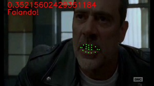
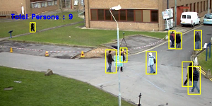
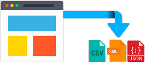

Sobre
Sou um solucionador de problemas, que busca constantemente otimizar processos repetitivos através de scripts. Curioso e investigativo, procuro extrair a melhor informação dos dados usando técnicas de mineração de dados, realizando predições sobre esses dados com aprendizagem de máquina.
Cientista de Dados
- Nascimento: 17 Maio 1990
- Website: https://bborguesan.github.io/
- Telefone: +55 46 99125-1985
- Cidade: Francisco Beltrão, PR, Brasil
- Idade: 30
- Titulação acadêmica: Mestre
- E-mail: bborguesan@gmail.com
- Freelance: Aceitando Serviços!
- Aberto a oportunidades
Meu nome é Bruno Borguesan, possuo graduação em Ciência da Computação pela Universidade Estadual do Oeste do Paraná, onde meu trabalho de conclusão de curso foi relacionado ao aprimoramento e portabilidade de um sistema para modelagem de distribuição de espécies aplicando um Algoritmo Genético utilizando conhecimento das bases de distribuição de espécies desenvolvido em C++. Possuo Mestrado em Ciência da Computação pela Universidade Federal do Rio Grande do Sul, onde na minha dissertação foi desenvolvida uma nova abordagem que utiliza conhecimento extraído da base de dados experimentais para inicializar a população de um Algoritmo Genético utilizando abordagem de nichos para tratar o problema multimodal da predição da estrutura tridimensional de proteínas, trabalhando principalmente com a linguagem PYTHON. No ano de 2020, me dediquei para focar minha carreira 100% em Ciência de Dados e estou pronto para aplicar meu conhecimento em novos desafios.
Habilidades
Estes são meus principais níveis de habilidade:
Proficiência em Línguas:
Fatos
Alguns fatos interessantes:
Projetos Multidisciplinares
Artigos Desenvolvidos
Fios Brancos
Minhas credenciais
Essas são minhas formações até o momento:
Formação
Doutorado em Ciência da Computação
2017 - 2018
Programa de Pós-Graduação em Computação - UFRGS
Doutorado interrompido.
Mestre em Ciência da Computação
2014 - 2016
Programa de Pós-Graduação em Computação - UFRGS
No período do Mestrado, escolhi as disciplinas Descoberta de Conhecimento em Base de Dados e Aprendizado de Máquina como as disciplinas base e a disciplina de Bioinformática como problemas alvo. Essas disciplinas me deram uma base muito boa para conseguir trabalhar com as grandes bases de dados para tratar e extrair conhecimento dessas bases a fim de aplicar esse conhecimento como entrada para algoritmos de predição. Na minha dissertação foi desenvolvido uma nova abordagem que utiliza conhecimento extraído da base de dados experimentais para inicializar a população de um Algoritmo Genético utilizando abordagem de nichos para tratar o problema multimodal da predição da estrutura tridimensional de proteínas. Durante o mestrado, ferramentas foram desenvolvidas para auxiliar a comunidade científica na área de Bioinformática. Também durante o mestrado vários trabalhos foram publicados tanto em congressos como em periódicos de relevância na área de Ciência da Computação e Bioinformática. Na parte do desenvolvimento foi utilizada a linguagem Python devido a simplicidade de sua sintaxe, o que permitia a fácil implementação de diferentes métodos bem como a integração com diferentes gerenciadores de bancos de dados e plataformas de computação em nuvem. Ao final do curso, fui aprovado nos programas de Doutorado da Universidade Federal do Rio Grande do Sul e da Universidade Estadual de Campinas.
Bacharel em Ciência da Computaçãon
2008 - 2013
Universidade Estadual do Oeste do Paraná - UNIOESTE
Meu trabalho de conclusão de curso foi relacionado ao aprimoramento e portabilidade de um sistema para modelagem de distribuição de espécies onde foi aplicado um Algoritmo Genético utilizando conhecimento das bases de distribuição de espécies desenvolvido em C++. Realizei o estágio obrigatorio em desenvolvimento JAVA ao final do curso.
Hiato
Representante Comercial
2018 - 2020
Após interromper o doutorado, voltei à minha cidade natal para trabalhar como representante comercial de produtos não relacionados com computação. Foi um desafio que resolvi escolher para ter uma experiência fora da minha área de formação. Durante esse período, consegui evoluir bastante a parte de interação com o cliente, que é uma questão que quem é de computação normalmente sente bastante falta. Entretanto, mesmo tentando ficar fora da área, constantemente me via gerando relatórios sobre as vendas analisando o banco de dados das empresas e desenvolvendo aplicações que auxiliassem de alguma forma os representantes.
Cursos
Microsoft Power BI para Data Science
2020
Data Science Academy - DSA
Durante o período de 2020 fiz o curso de Microsoft Power BI para Data Science realizado pela Data Science Academy (DSA), usando na prática técnicas de Data Science para gerar modelos preditivos e extrair insights para a tomada de decisões, integrando o Power BI com o R e Python.
Bootcamp Arquiteto Cloud Computing
2020
Instituto de Gestão e Tecnologia da Informação - IGTI
Durante o período de 2020 participei do Bootcamp de Arquiteto Cloud Computing, realizado pelo Instituto de Gestão e Tecnologia da Informação (IGTI), onde basicamente tive uma atualização das plataformas da AWS e AZURE, apresentando os modelos de serviços e os recursos para projetar e implementar soluções de infraestrutura de redes, armazenamento, servidores, dados, backup, monitoração e aplicações em nuvem.
Deep Learning
2020 - presente
Data Science Academy - DSA
Curso em andamento, focado nas principais abordagen de Deep Learning aplicados na prática.
Projetos
Análise de Imagens - Falando
📅 2020 - 🗣
Projeto realizando para uma entrevista, onde o objetivo era utilizar visão computacional para identificar em video pessoas falando. (Ainda em desenvolvimento).
Vá para o projetoPrever o Cancelamento de Reservas em Hotéis
📅 2021 - 📈 Visualização
Baseado no miniprojeto desenvolvido durante o curso de Deep Learning da DSA, que tem o objetivo de Prever o Cancelamento de Reservas em Hotéis. (Ainda em desenvolvimento)
Vá para o projetoPrever a Inadimplência do Cartão de Crédito
📅 2020 - ⚠️ Risco
Projeto com o objetivo de prever a inadimplência de clientes de cartão de crédito! Construir e publicar um modelo de Machine Learning para realizar as previsões baseado no histórico de pagamento dos últimos 6 meses, utilizando a base de dados do repositório UCI, com 30000 clientes. (Ainda em desenvolvimento).
Análise de Imagens - Caminhando
📅 2020 - 🚶♂️
Projeto realizando para uma entrevista, onde o objetivo era utilizar visão computacional para identificar e contar pessoas andando. (Ainda em desenvolvimento).
Vá para o projetoInterpretador de ECG
📅 2020 - 👩⚕ Saúde
Projeto com o objetivo de a partir de uma imagem, identificar o gráfico de ECG e retornar informações auxiliando o profissional da área no diagnóstico. (Ainda em desenvolvimento)
Web Scraping e Plataforma HotSmart
📅 2020 - 🕵🏼 Web Scraping
Realizar Web Scraping de cursos na plataforma Hot Smart e baixar o conteudo do curso. (Ainda em desenvolvimento).
Serviços
O que eu posso fazer por você?
Estes são alguns exemplos de projetos em que posso utilizar minhas habilidades para gerar soluções para problemas que você possa enfrentar.
Análise Preditiva
Criar modelos preditivos que analisem fatos históricos e atuais para fazer previsões sobre eventos futuros ou desconhecidos de seu interesse.
Visualização de Dados e Dash Boards
Criar gráficos interativos com excelentes designs para organizar seus dados e proporcionar a visualização permitindo insights sobre o problema.
Consultoria
Fornecer apoio especializado para a definição e resolução de problemas minimizando as chances de falha no desenvolvimento de sua solução.
Contato
Fale Comigo - Estou a disposição para te ajudar!
E-mail:
bborguesan@gmail.comTelefone:
+55 46 99125-1895